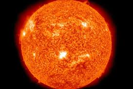

The Sun is a G-type main-sequence star (G2V) located at the center of the Solar System. It contains about 99.8% of the Solar System’s total mass and is composed primarily of hydrogen and helium. The Sun produces energy through nuclear fusion in its core, where hydrogen atoms fuse into helium, releasing vast amounts of energy as light and heat. Its gravitational force keeps the planets and other bodies in orbit, and its average surface temperature is about 5,500°C (9,900°F).